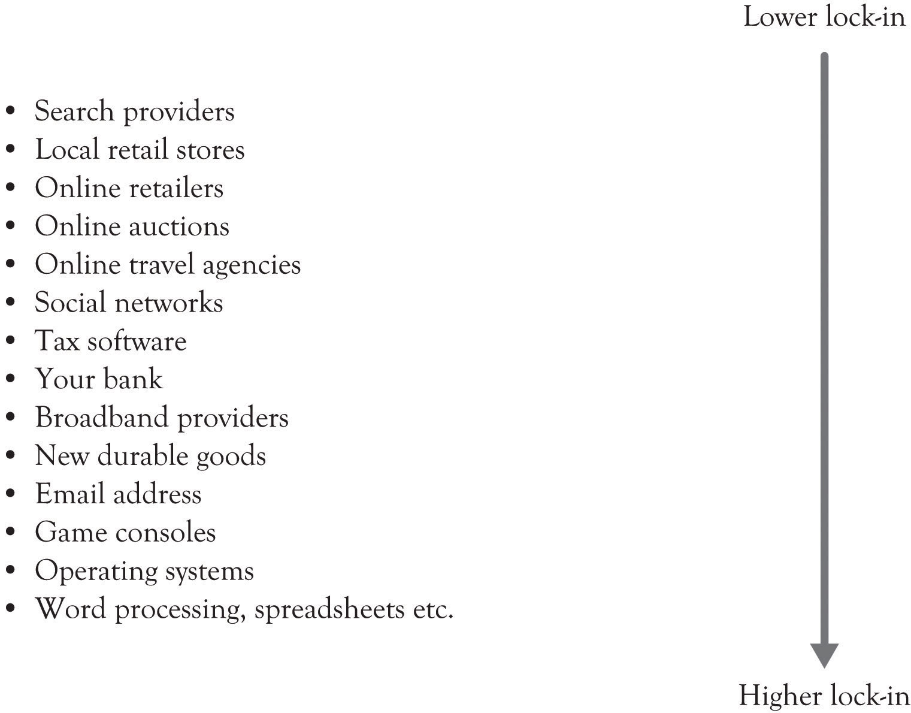

Lock-in occurs when there are costs involved in switching from one product or service to another product or service. For example, consider how cable television broadband providers and wireless phone providers have penalties for the customers who terminate a contract within the term of specific agreement periods. Switching costs can also involve time and psychological effort. When you switch cable providers, there is a definite learning curve related to using the new station guide and digital video-recording device. Cable providers try to increase monetary and psychological switching costs so that consumers are locked-in to their service. The nature of psychological switching costs can be traced to past use of a product and to the learning effects as consumers become attached to the product and become familiar with the interface and how to control the interface. Economists have identified a related concept that they refer to as the increasing-returns-to-adoption phenomena where the use of a technology leads to greater use and this in turn leads to technological improvements.Arthur (1989). This “learning by use” approach, which we have also described in an earlier chapter as the learning-by-doing phenomena, creates a situation where locking-in customers essentially locks-out the competition.
Lock-inOccurs when costs are involved in switching from one product or service to another product or service. also increases the so-called network effect phenomenon. A network effectWhen the value of a good is dependent on the number of customers already owning that good. occurs when the value of a good is dependent on the number of customers already owning that good. Metcalfe’s law states that the value or utility of a network is proportional to the number of users of the network.Shapiro and Varian (1998). In the economics literature, a network effect typically refers to a change in the positive benefit that a consumer receives from a product when the number of consumers of the good increases.Liebowitz and Margolis (1994). Lock-in is also related to Moore’s law, whereby the performance of products always increases over time and the cost of the product stays the same or decreases. This increase in performance is a function of technological developments and learning curve effects. When network effects are combined with increased product performance, product diffusion can increase dramatically and result in exponential market growth and sales (see Figure 10.1 "Growth and Lock-In").
Figure 10.1 Growth and Lock-In

Switching costsCosts that result from switching to a new product or service. are the costs that result from switching to a new product or a new service. They are often viewed in terms of dollars but they can also be conceptualized in terms of time and psychological effort. Switching costs can include early termination costs, the amount of time and effort to switch, all learning costs required to understand the new product or service, cash outlays for switching, and even the emotional discomfort caused by switching.Burnham, Frels, and Mahajan (2003). The goal of buyers is to try and avoid switching costs and not be locked-in to a particular product, service, or technology. Buyers want flexibility and they try to avoid lock-in.
The goal of producers is to essentially lock-in their customers and lock-out the competition. This is accomplished by creating a value proposition for their customers and make it difficult for them to leave the fold because of the high switching costs. Here is a list of situations that result in product and service lock-in:This section is based on Kaplan and Norton (2003a, September 15); Shapiro and Varian (1998).
Figure 10.2 "Levels of Lock-In for Several Businesses" illustrates the author’s view of the degree of lock-in for several business activities. One particular interesting example of lock-in is related to social networking sites such as Facebook, MySpace, and LinkedIn. Social networking sites have an abundance of features that facilitate lock-in. First, they encourage the development of very strong emotional ties among the participants. Secondly, some of them attempt to thwart searching by search engines. And finally, they encourage the customization and control of the home screen. Our research has found that if you can give users the ability to control and customize their environment, then they will begin to exhibit feelings of ownership toward a virtual place.Jo, Moon, Garrity, and Sanders (2007). It appears that in some people, the emotional ties are stronger than the ties exhibited by some individuals toward a house or a car. In addition, there is a positional effect. This can reduce the influence and reduce the network effects:
Figure 10.2 Levels of Lock-In for Several Businesses
Positional goods purchases, consequently, are interdependent: what we buy is partially a function of what others buy. Put another way, the value of a positional good arises in part from social context. The positionality of a particular good is often two-sided: its desirability may rise as some possess it, but then subsequently fall as more possess it.… A particular fast car is most desirable when enough people possess it to signal that it is a desired object, but the value diminishes once every person in the neighborhood possesses one. Nothing about the car itself has changed, except for its ability to place its owner among the elite and to separate her from the crowd. Similarly, part of the appeal of a “fashionable” resort is that only a few people know about it, or are able to afford it. For these goods, the value of relative exclusivity may be a large part of the goods’ total appeal.”Raustiala and Sprigman (2006), p. 1719.
We have developed a set of questions that can be used to measure lock-in. It can be viewed as a lock-in index. Try to think of a product or service and then answer the following questions:
If the score for the product or service is above 9, then this is a product or service with significant switching costs and lock-in. If the score is between 6 and 9, then the lock-in is moderately strong. If the score is between 3 and 6, then the lock-in is average. And if the score is 3, then the lock-in is minimal. If the score is zero, then you are probably buying an off-brand candy bar.
There are some products where the lock-in is transitory. Consider the fashion and clothing industry where the lead designers develop an anchor for next year’s fashion.Raustiala and Sprigman (2006). The premier lines typically develop seasonal themes for the fashion community. Everyone copies the anchored themes including the fashion leaders with their slightly scaled-back bridge lines (e.g., Gap Inc. represented by Banana Republic, the Gap and Old Navy and the Armani Group represented by Giorgio Armani, Armani Collezioni, and Emporio Armani). Copying is actually beneficial to the fashion industry. Copying an emerging fashion concept helps to standardize the design for a year or two until the design becomes obsolete. Some level of standardization is essential or chaos would ensue and costs would skyrocket because the supply chain would never stabilize. Nevertheless, the fashion themes are extremely transitory because, in a very short time, a new theme emerges and the old theme is out-of style.
A consistent theme of this book is that companies must pursue innovation and differentiation constantly. Locking in your customers does not mean you can abandon innovation and let your products and service languish in mediocrity. Because consumers will eventually abandon your products and services and you will eventually fade from the marketplace. As we have said in an earlier chapter, people want to control their environment and they do not want to be controlled. Google has been very proactive on this front because they realize that lock-in is very transitory and they have attempted to engender trust through innovation.Fitzpatrick and Lueck (2010). Cable companies were able to lock-in their customers because there was very little competition. The landline cable companies avoided innovation and they treated their customers poorly. It is only recently that they have been able to shirk their earlier image and begin to engender trust and acceptance in the marketplace. All businesses must change, even if it is only in the minds of consumers, or they will eventually be abandoned.
OutsourcingA contractual relationship between one business and another. is a contractual relationship between one business and another. The outsourcee, the company trying to outsource some organizational function, can have the outsourcer company provide manufacturing, product design, product distribution, IT services and infrastructure support, and about everything else including strategic planning support. There are many reasons why companies turn toward outsourcing, including reducing costs, access to expertise, and increased production capacity, as illustrated in Note 10.5 "Benefits of Outsourcing".Belcourt (2006), pp. 269–279. At the same time, there are many reasons that outsourcing can create problems as illustrated in Note 10.6 "Risks of Outsourcing". There is, however, one major reason that outsourcing creates problems. Outsourcing causes the organization to lose its absorptive capacity in the area that was outsourced. As noted in an earlier chapter, having absorptive capacity means that a company is able to evaluate new technological development because the company or the owner has insight and expertise into a particular area. Organizations with absorptive capacity have developed knowledge structures and insight in a particular domain. Having absorptive capacity gives an organization the ability to understand, assimilate and exploit new knowledge and information, and then to apply it to solving problems and developing commercially viable products. If an organization outsources an ability or capability, which is a core competency, then the organization may not be able to understand and recognize when an emerging technology is important. In the worst case, the organization may not be able to develop products because it does not have the know-how since it has already lost the ability to learn-by-doing and learn-about.
Costs may be greater than anticipated.
Customer acquisition and customer retention through lock-in are the two primary components of market share. Once customers have been acquired, the next step is to retain them. There has been an ongoing debate on whether to focus on acquisition or retention marketing.Lenskold (2003). Both are important. But there has been significant interest in retention because of the research findings on customer retention. For example, increasing customer retention by just 5% can increase profits by 25–95%.Reichheld and Schefter (2000).
The point is that customer retention should be a critical goal for all organizations. This is particularly true in the current business climate where substitute products and competition from unforeseen sources are the norm. Customer acquisition and customer retention are related to the development of a viable business model and having good products, good people, a good brand, successful marketing, a capable R&D process, and an efficient supply chain.
In this chapter, we have discussed the concept of lock-in and identified various issues on the lock-in such as how companies can achieve it, the downside of it, and the lock-in index for practical use. We also have addressed the relationship between the lock-in and companies’ absorptive capacity within the framework of outsourcing. The key points are the following:
Figure 10.3 Lock-In Issues